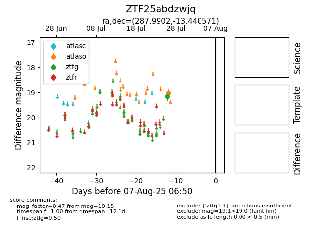

Target ZTF25abdzwjq at 2025-08-07 07:30, see:
FINK: fink-portal.org/ZTF25abdzwjq
Lasair: lasair-ztf.lsst.ac.uk/objects/ZTF25abdzwjq
ALeRCE: alerce.online/object/ZTF25abdzwjq
alt names
ZTF25abdzwjq (ztf,fink)
coordinates:
equatorial (ra, dec) = (287.9902,-13.44057)
galactic (l, b) = (23.1389,-10.56771)
photometry
last atlaso=19.01, ztfg=19.15
1 atlaso, 1 ztfg detections
